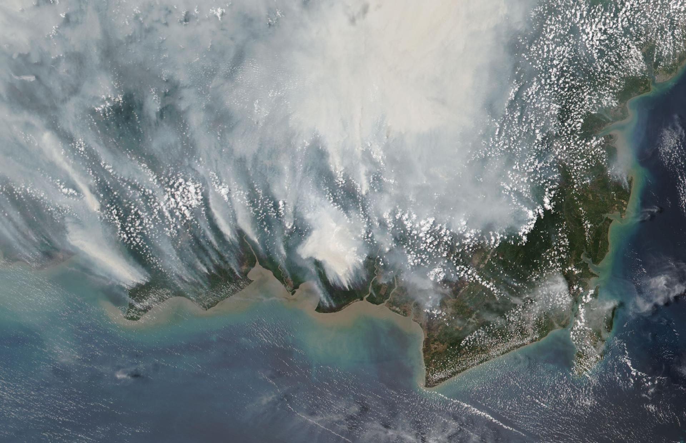
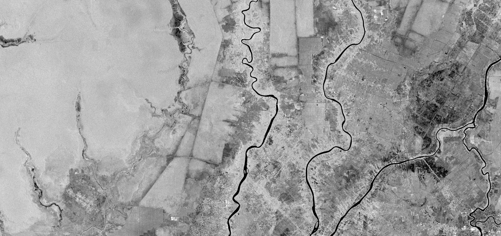
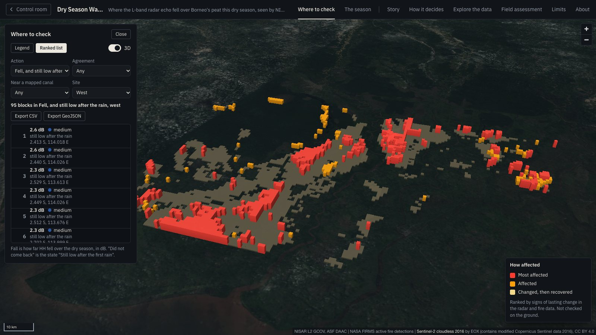

NASA Space Apps Challenge 2026 · Dancing with the SARs · Team Garugons
Dry Season Waltz
What NISAR's L-band radar saw over Borneo's peat in the 2026 dry season: where the ground dried, where it burned, and what the first rain did not bring back.
Open map, code and datatommyquak.github.io/GarugonsSpaceApps
The problem
Every dry season, drained peat in Borneo burns. A camera sees the smoke.


Canals cut for the Mega Rice Project in the 1990s still drain this peat. Dry peat burns, and the smoke reaches cities across the region.
Cloud first, then smoke: optical satellites lose the ground in exactly the weeks that matter.
NISAR's radar sees the ground through both. Peat fires are not the only fires in Indonesia, so the map shows fire off peat too.
The app · The season
The dry season, one radar pass at a time.
of mapped peat in the west box fell by 1 dB or more, on both orbits, against closed forest.
median rise of the echo on the first pass after the first rain, on the blocks that had dried most.
The echo fell along the canals, fire built up on the same open peat, and the rain brought the echo back on most land. Click any place for its own curve, with rain and fire dates.
The app · Where to check
From a map to a list a team can carry.

- Most affectedfire on several days, vegetation echo still low
- Affectedthe echo fell and stayed low after the rain
- Recoveredchanged, then came back with the rain
The evidence
Why believe it.
Forest held still
…of open peat fell by 1 dB or more on both orbits. In closed forest on the same peat: ….
Two orbits agree
…rank agreement between the dawn and dusk orbits, which look from opposite sides, on where the echo fell. East box: ….
Rain brought it back
+… dBmedian rise on the first pass after the first rain, on the blocks that had dried most. Dusk orbit: … dB.
Fire returns
…of this year's fire on western peat fell on the … of it that had burned in 2015, 2019 or 2023.
The limits
What it is not.
- Not a measurement. It is a screening map of where to look. It does not measure the water table and does not recommend any work.
- Not checked on the ground. No field data exists for this season, and public water-level records end before NISAR began.
- One season. And one pass per orbit after the rain, from a later processing release than the dry passes.
- Not a fire forecast. A bigger fall is not worse land: peat beside a canal falls far and recovers with the first rain.
- The east box depends on the peat map. Two published peat maps disagree there.
We had it attacked part-way through.
An independent review went through the method and the numbers.
It cut our headline area, and we published what it found and what we changed, in docs/AUDIT.md. The limits live inside the app, one click from the map.
What comes next
Ground truth first.
- Go and look. About sixty field visits would calibrate the map, or show where it is wrong. The protocol is written.
- More seasons. Every NISAR pass adds to the record: wet years against dry, and subsidence by interferometry.
- Other peatlands. The pipeline takes any bounding box. It has not yet been run on a second site.
- The app
- tommyquak.github.io/GarugonsSpaceApps
- Code and data, MIT licence
- github.com/tommyquak/GarugonsSpaceApps
- Reproduce it
- one script, pipeline/run_all.sh
Data: NISAR L2 GCOV, NASA and ISRO, from ASF DAAC. FIRMS active fire, NASA. GPM IMERG rainfall, NASA. PEATMAP, Xu et al. 2018, CC BY 4.0. OpenStreetMap contributors. Built with Super Intelligence (SI) assistance, logged in submission/si_use.